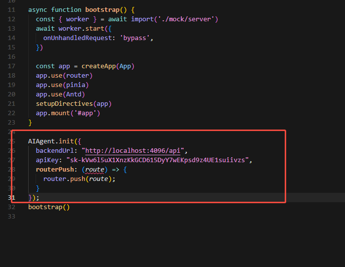

问答、路由跳转、当前页操作。
Open Source Web Agent Layer
让后台页面拥有可控的 AI 操作员
`portable-ai-agent-widget` 面向后台、中台、运营系统，提供一个可落地的页面级 AI Agent 接入层。 它把前端 Widget、FastAPI 后端和 `webGenerate` 知识文档工作流拆成三层， 重点解决三件事：回答页面问题、跳转到目标页面、在当前页执行受控动作。
MIT License
Vite + Vanilla JS
FastAPI + LangChain
webAIDocs Workflow
MCP Ready
业务页面接入 Widget，业务项目生成 `webAIDocs/`。
前端只执行白名单动作，不向浏览器开放任意脚本能力。
$webGenerate . --update
AIAgent.init({ selfAuth: false })
POST /api/chat · /api/chat/stream
Demo
能力演示
把说明留给视频本身，首页只保留最短的能力标签和使用场景。
知识问答
基于当前路由和 `webAIDocs` 回答页面用途、入口位置和操作路径。
路由跳转
把自然语言目标转成 `navigate` 动作，由前端路由执行跳转。
表单填写
把当前页的筛选、输入、确认和按钮点击交给受控动作链处理。
MCP 能力
后端可继续挂接 MCP 工具，让 Agent 除页面知识外再获得扩展能力。
快速生成文档
通过 `webGenerate` 把业务项目页面沉淀成 `routes.md` 与 `page-xxx.md`。
Capabilities
当前 Agent 拥有的能力
这里只保留一句话级别的能力摘要，详细效果直接看上面的演示视频。
页面问答
回答当前页面做什么、入口在哪、下一步如何操作。
受控导航
把自然语言目标转成页面跳转，不做任意浏览器自动化。
当前页操作
执行表单填写、筛选查询、按钮点击和弹窗确认等动作。
流式对话
支持持续会话、流式返回和新建 session，而不是每轮从零开始。
安全鉴权
支持 `selfAuth` 和服务端 `getToken()` 两种接入模式。
知识文档与 MCP
复用 `webAIDocs/`，并可在后端继续挂接 MCP 工具能力。
Quick Start
快速开始
推荐按这四步接入，尽量保持和仓库现有 README、Quick Start 一致。
安装工作流
先把 `webGenerate` 安装到你的助手里。
npx portable-ai-agent-widget codex install生成知识文档
在业务项目里生成 `webAIDocs/`，再复制回当前仓库。
$webGenerate .
$webGenerate . --update启动后端
配置管理员、API Key 和模型，启动 FastAPI 服务。
cd backend
pip install -r requirements.txt
python main.py初始化 Widget
在业务前端里调用 `AIAgent.init()` 完成接入。
AIAgent.init({
backendUrl: "http://localhost:4096/api",
apiKey: "sk-your-api-key",
routerPush: (route) => router.push(route),
});
Integration
前端接入
核心接入点只有一个：在业务项目启动阶段初始化 `AIAgent`，并把路由跳转函数传进去。

接入时你需要提供的最少信息
- `backendUrl`：后端 API 地址。
- `apiKey` 或 `getToken()`：开发联调和生产模式二选一。
- `routerPush(route)`：把 `navigate` 动作接到你的项目路由。
生产推荐
使用 `selfAuth=false`，由业务服务签发短期 token，不把长期 API Key 下发到浏览器。
Architecture
架构设计
整体结构非常直接：前端承接交互，后端做决策，`webAIDocs` 提供页面知识。
前端 Widget
负责对话 UI、页面上下文采集和白名单动作执行。
FastAPI 后端
负责鉴权、模型决策、会话接口、MCP 接入和动作裁剪。
`webAIDocs`
负责给 Agent 提供路由、元素和页面流程这三类核心知识输入。
页面提问
Widget 发送上下文
后端结合知识决策
输出问答或动作
前端执行白名单动作